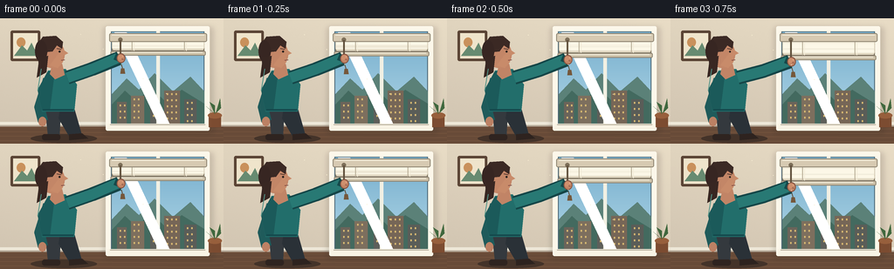
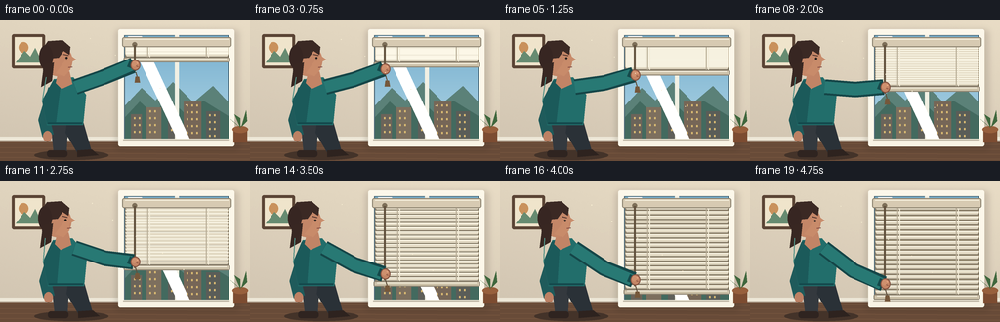

CODING AGENTS AS PIXEL WORLD MODELS
traex/GPT-5.6-Sol · motion_rationality_0056
点击播放 · 原生 RGB 像素
逐轮保存的候选
回放视频、检查图与代码变化。
每份候选均可单独播放。实际图片检查记录在下方工具轨迹中。
候选 01播放与检查图
点击播放 · 原生 RGB 像素


展开代码变化
--- 上一保存版本
+++ 本次保存版本
@@ -0,0 +1,205 @@
+from pathlib import Path
+import math
+import numpy as np
+from PIL import Image, ImageDraw, ImageFilter
+import artifact_io
+
+# Deterministic, hand-drawn animation generated entirely from prompt text.
+W, H, N = 256, 144, 20
+S = 4
+rng = np.random.default_rng(8)
+
+
+def ease(x):
+ return x * x * (3.0 - 2.0 * x)
+
+
+def pts(seq):
+ return [(int(round(x*S)), int(round(y*S))) for x, y in seq]
+
+
+def box(b):
+ return tuple(int(round(v*S)) for v in b)
+
+
+def draw_scene(fi):
+ t = fi / (N - 1)
+ p = ease(t)
+
+ # Soft plaster wall and afternoon light.
+ yy, xx = np.mgrid[0:H*S, 0:W*S]
+ warm = np.empty((H*S, W*S, 3), dtype=np.float32)
+ light = 1.0 - 0.08*(yy/(H*S)) + 0.035*(xx/(W*S))
+ warm[..., 0] = 223*light
+ warm[..., 1] = 211*light
+ warm[..., 2] = 190*light
+ noise = rng.normal(0, 0.7, (H*S, W*S, 1))
+ warm = np.clip(warm + noise, 0, 255).astype(np.uint8)
+ im = Image.fromarray(warm, 'RGB')
+ d = ImageDraw.Draw(im)
+
+ # Floor and baseboard.
+ d.rectangle(box((0, 123, 256, 144)), fill=(105, 77, 58))
+ for y in range(125, 145, 5):
+ d.line(pts([(0, y), (256, y+2)]), fill=(117, 86, 64), width=S)
+ d.rectangle(box((0, 119, 256, 124)), fill=(235, 229, 213))
+ d.line(pts([(0, 123), (256, 123)]), fill=(159, 145, 128), width=S)
+
+ # Framed art on the left wall.
+ d.rounded_rectangle(box((12, 14, 46, 49)), radius=2*S, fill=(92, 70, 55))
+ d.rectangle(box((15, 17, 43, 46)), fill=(237, 226, 202))
+ d.ellipse(box((19, 22, 29, 33)), fill=(200, 145, 93))
+ d.polygon(pts([(16,43),(25,31),(31,37),(36,28),(43,43)]), fill=(104,139,114))
+
+ # Broad window shadow cast onto the wall.
+ shadow = Image.new('RGBA', im.size, (0,0,0,0))
+ sd = ImageDraw.Draw(shadow)
+ sd.rounded_rectangle(box((119, 10, 244, 132)), radius=3*S, fill=(72,59,48,45))
+ shadow = shadow.filter(ImageFilter.GaussianBlur(3*S))
+ im = Image.alpha_composite(im.convert('RGBA'), shadow).convert('RGB')
+ d = ImageDraw.Draw(im)
+
+ # Window casing and recess.
+ d.rounded_rectangle(box((121, 9, 240, 129)), radius=2*S, fill=(249, 245, 232))
+ d.rectangle(box((127, 15, 234, 123)), fill=(77, 105, 119))
+
+ # Outdoor sky inside glass.
+ for y in range(16, 123):
+ q = (y-16)/107
+ col = (int(119+57*q), int(174+39*q), int(204+24*q))
+ d.line(pts([(128,y),(233,y)]), fill=col, width=S)
+ # Clouds and distant hills/buildings.
+ d.ellipse(box((181, 25, 215, 35)), fill=(221, 233, 234))
+ d.ellipse(box((199, 22, 227, 35)), fill=(226, 236, 237))
+ d.polygon(pts([(128,87),(145,69),(159,82),(177,63),(198,84),(218,67),(234,84),(234,123),(128,123)]), fill=(92,129,121))
+ d.polygon(pts([(128,99),(143,83),(157,96),(172,79),(191,97),(208,82),(234,98),(234,123),(128,123)]), fill=(69,107,96))
+ for bx, bw, bh, c in [(134,11,27,(108,101,91)),(150,15,34,(126,112,95)),(172,10,22,(95,96,91)),(188,18,40,(119,103,88)),(211,14,30,(91,94,89))]:
+ d.rectangle(box((bx,123-bh,bx+bw,123)), fill=c)
+ for wy in range(int(126-bh), 118, 7):
+ for wx in range(bx+3,bx+bw-2,5):
+ d.rectangle(box((wx,wy,wx+1.4,wy+2)), fill=(215,185,115))
+ # Window mullion, sill and cool glass sheen.
+ d.rectangle(box((179, 15, 183, 123)), fill=(239, 238, 225))
+ d.polygon(pts([(131,16),(145,16),(195,123),(182,123)]), fill=(255,255,255))
+ # transparent sheen done by overlay
+ sheen = Image.new('RGBA', im.size, (0,0,0,0)); shd = ImageDraw.Draw(sheen)
+ shd.polygon(pts([(131,16),(145,16),(195,123),(182,123)]), fill=(255,255,255,24))
+ im = Image.alpha_composite(im.convert('RGBA'), sheen).convert('RGB'); d = ImageDraw.Draw(im)
+ d.rectangle(box((123, 121, 239, 128)), fill=(246, 241, 226))
+ d.line(pts([(126,122),(235,122)]), fill=(177,169,151), width=S)
+
+ # Lowering Venetian blind: fixed slats spread from the compact top stack.
+ blind_bottom = 39 + 78*p
+ # subtle blind shadow on glass
+ d.rectangle(box((128, 17, 234, blind_bottom+2)), fill=(150, 138, 115))
+ num_slats = 18
+ for j in range(num_slats):
+ sy = 27 + (blind_bottom-31) * (j/(num_slats-1))
+ # Rear shadow and angled cream-colored slat.
+ d.line(pts([(128.5,sy+1.5),(233.5,sy+1.5)]), fill=(119,111,94), width=max(S, int(1.1*S)))
+ d.polygon(pts([(128,sy-1.5),(234,sy-1.5),(232.5,sy+1.5),(129.5,sy+1.5)]), fill=(224,215,194))
+ d.line(pts([(129,sy-1.2),(233,sy-1.2)]), fill=(249,245,229), width=S)
+ # vertical ladder tapes clarify that this is a blind.
+ for tx in (151, 211):
+ d.line(pts([(tx,26),(tx,blind_bottom)]), fill=(182,171,149), width=S)
+ d.line(pts([(tx+2.2,26),(tx+2.2,blind_bottom)]), fill=(242,234,214), width=S)
+ # Bottom rail moves steadily down.
+ d.rounded_rectangle(box((126.5, blind_bottom-1.6, 235.5, blind_bottom+3.8)), radius=1.6*S,
+ fill=(204,193,169), outline=(142,132,114), width=S)
+ d.line(pts([(130,blind_bottom),(232,blind_bottom)]), fill=(242,236,219), width=S)
+ # Top valance hides the compressed stack.
+ d.rounded_rectangle(box((125, 17, 237, 27)), radius=2*S, fill=(213,201,177), outline=(143,133,115), width=S)
+ d.line(pts([(128,19),(234,19)]), fill=(244,238,220), width=S)
+
+ # Pull cord: taut from the blind mechanism to the moving hand.
+ hand_x = 139.0 + 0.8*math.sin(t*math.pi)
+ hand_y = 45.5 + 59.0*p
+ d.ellipse(box((135.2,22.0,140.2,27.0)), fill=(127,113,91))
+ d.line(pts([(137.7,25),(137.7,hand_y+6.5)]), fill=(98,82,63), width=max(S,2*S))
+ # free cord/tassel follows below the grasp.
+ d.line(pts([(137.7,hand_y+4),(140.5,hand_y+13)]), fill=(98,82,63), width=S)
+ d.polygon(pts([(138.4,hand_y+12),(142.3,hand_y+12),(143.2,hand_y+18),(137.7,hand_y+18)]), fill=(118,89,61))
+
+ # Person's floor shadow.
+ d.ellipse(box((35,133,111,143)), fill=(70,53,44))
+
+ # Legs behind torso, gently braced for the pull.
+ shift = 1.5*p
+ d.polygon(pts([(51+shift,101),(70+shift,101),(68+shift,136),(55+shift,136)]), fill=(54,59,64))
+ d.polygon(pts([(69+shift,101),(84+shift,100),(94+shift,135),(80+shift,137),(67+shift,115)]), fill=(45,51,57))
+ d.rounded_rectangle(box((48+shift,133,69+shift,140)), radius=3*S, fill=(49,39,35))
+ d.polygon(pts([(79+shift,133),(94+shift,132),(101+shift,138),(79+shift,140)]), fill=(48,38,34))
+
+ # Back arm hanging naturally.
+ d.line(pts([(55+shift,70),(45+shift,102),(49+shift,118)]), fill=(34,92,92), width=12*S, joint='curve')
+ d.ellipse(box((44+shift,113,53+shift,124)), fill=(187,129,101))
+
+ # Torso leaning slightly toward the cord.
+ lean = 2.0*(1-p) + 0.5*p
+ d.polygon(pts([(53+lean,60),(73+lean,58),(88+shift,76),(85+shift,107),(48+shift,107),(43+shift,82)]), fill=(37,111,108))
+ d.polygon(pts([(52+lean,62),(61+lean,58),(57+shift,106),(48+shift,106),(43+shift,82)]), fill=(30,91,91))
+ d.line(pts([(49+shift,105),(84+shift,105)]), fill=(23,76,79), width=2*S)
+ # Neck.
+ d.polygon(pts([(57+lean,55),(69+lean,52),(72+lean,65),(61+lean,70),(55+lean,64)]), fill=(192,132,103))
+
+ # Pulling arm: shoulder-elbow-wrist forms a plausible articulated chain.
+ shoulder = (75+lean, 68)
+ # Elbow remains outward while descending, then tucks toward the waist.
+ elbow = (105.5 + 2*math.sin(math.pi*t), 58 + 33*p)
+ wrist = (136.4, hand_y)
+ # arm shadow, sleeve, cuff
+ d.line(pts([shoulder, elbow, wrist]), fill=(24,72,74), width=16*S, joint='curve')
+ d.line(pts([shoulder, elbow, (wrist[0]-2,wrist[1])]), fill=(43,122,117), width=12*S, joint='curve')
+ d.line(pts([(wrist[0]-5,wrist[1]-2),(wrist[0],wrist[1])]), fill=(24,75,76), width=8*S)
+
+ # Hand wraps around the cord; fingers remain visibly on top.
+ d.ellipse(box((133.4,hand_y-5.2,143.4,hand_y+5.8)), fill=(194,133,102), outline=(132,83,66), width=S)
+ d.line(pts([(138.0,hand_y-3.2),(141.1,hand_y-1.5)]), fill=(235,173,137), width=S)
+ d.line(pts([(138.0,hand_y+0.4),(141.3,hand_y+1.7)]), fill=(145,89,70), width=S)
+ d.ellipse(box((135.0,hand_y-4.0,139.7,hand_y+1.8)), fill=(205,144,111))
+
+ # Head in right-facing profile; eyes track the descending hand.
+ hx = 57+lean
+ d.ellipse(box((43+lean,25,72+lean,57)), fill=(194,134,104))
+ # profile nose and chin
+ d.polygon(pts([(69+lean,35),(76+lean,40),(70+lean,43),(70+lean,50),(64+lean,57),(55+lean,54)]), fill=(199,139,107))
+ # ear
+ d.ellipse(box((43+lean,39,50+lean,48)), fill=(176,112,89), outline=(129,78,66), width=S)
+ # hair cap and loose back strands
+ d.polygon(pts([(42+lean,43),(40+lean,31),(47+lean,21),(62+lean,20),(70+lean,27),(69+lean,35),(63+lean,31),(58+lean,38),(48+lean,39),(48+lean,53),(42+lean,51)]), fill=(61,44,39))
+ d.ellipse(box((38+lean,25,52+lean,50)), fill=(57,41,37))
+ d.polygon(pts([(43+lean,45),(40+lean,68),(51+lean,62),(53+lean,43)]), fill=(58,42,37))
+ # Eye looks progressively downward; brow and small smile.
+ eye_y = 37.0 + 2.2*p
+ d.line(pts([(63+lean,34.5+1.3*p),(68+lean,35.5+1.5*p)]), fill=(70,47,42), width=S)
+ d.ellipse(box((65+lean,eye_y,67.2+lean,eye_y+2.2)), fill=(42,36,33))
+ d.line(pts([(68+lean,48),(72+lean,47.5)]), fill=(123,70,65), width=S)
+
+ # Warm rim light on figure and tiny plant at far right for depth.
+ d.line(pts([(45+lean,58),(43+shift,83)]), fill=(86,148,136), width=S)
+ d.rectangle(box((239,111,253,125)), fill=(125,78,51))
+ d.ellipse(box((238,108,254,115)), fill=(151,96,62))
+ for poly in [[(246,110),(240,96),(246,100)],[(247,109),(252,92),(253,103)],[(245,109),(236,101),(242,106)]]:
+ d.polygon(pts(poly), fill=(66,105,64))
+
+ # Subtle highlight/dust motes in the sunlit room.
+ for k in range(5):
+ x = 92 + 24*k + 2*math.sin(k*2+fi*.15)
+ y = 18 + ((17*k + fi*.35) % 80)
+ d.ellipse(box((x,y,x+0.8,y+0.8)), fill=(245,236,209))
+
+ # High-quality downsample and very mild finishing contrast.
+ im = im.resize((W,H), Image.Resampling.LANCZOS)
+ arr = np.asarray(im).astype(np.float32)
+ arr = np.clip((arr-128)*1.025 + 128, 0, 255).astype(np.uint8)
+ return arr
+
+
+def main():
+ frames = np.stack([draw_scene(i) for i in range(N)]).astype(np.uint8)
+ case_dir = Path(__file__).resolve().parent
+ artifact_io.save(frames, case_dir)
+
+
+if __name__ == '__main__':
+ main()
可观测工具轨迹
实际执行的命令与返回图片。
命令 1exit 0
/bin/bash -lc "cat prompt.txt && printf '\\n--- GENERATION_RULES ---\\n' && cat GENERATION_RULES.md && printf '\\n--- TASK_SPEC ---\\n' && cat task_spec.json"
命令 2exit 0
/bin/bash -lc "find . -maxdepth 2 -type f -printf '%p\\n' | sort && printf '\\n--- binaries ---\\n' && command -v ffmpeg && command -v python3 && command -v convert || true"
命令 3exit 0
/bin/bash -lc "sed -n '1,240p' artifact_io.py"
命令 4exit 0
/bin/bash -lc "cat > generate.py <<'PY'
from pathlib import Path
import math
import numpy as np
from PIL import Image, ImageDraw, ImageFilter
import artifact_io
# Deterministic, hand-drawn animation generated entirely from prompt text.
W, H, N = 256, 144, 20
S = 4
rng = np.random.default_rng(8)
def ease(x):
return x * x * (3.0 - 2.0 * x)
def pts(seq):
return [(int(round(x*S)), int(round(y*S))) for x, y in seq]
def box(b):
return tuple(int(round(v*S)) for v in b)
def draw_scene(fi):
t = fi / (N - 1)
p = ease(t)
# Soft plaster wall and afternoon light.
yy, xx = np.mgrid[0:H*S, 0:W*S]
warm = np.empty((H*S, W*S, 3), dtype=np.float32)
light = 1.0 - 0.08*(yy/(H*S)) + 0.035*(xx/(W*S))
warm[..., 0] = 223*light
warm[..., 1] = 211*light
warm[..., 2] = 190*light
noise = rng.normal(0, 0.7, (H*S, W*S, 1))
warm = np.clip(warm + noise, 0, 255).astype(np.uint8)
im = Image.fromarray(warm, 'RGB')
d = ImageDraw.Draw(im)
# Floor and baseboard.
d.rectangle(box((0, 123, 256, 144)), fill=(105, 77, 58))
for y in range(125, 145, 5):
d.line(pts([(0, y), (256, y+2)]), fill=(117, 86, 64), width=S)
d.rectangle(box((0, 119, 256, 124)), fill=(235, 229, 213))
d.line(pts([(0, 123), (256, 123)]), fill=(159, 145, 128), width=S)
# Framed art on the left wall.
d.rounded_rectangle(box((12, 14, 46, 49)), radius=2*S, fill=(92, 70, 55))
d.rectangle(box((15, 17, 43, 46)), fill=(237, 226, 202))
d.ellipse(box((19, 22, 29, 33)), fill=(200, 145, 93))
d.polygon(pts([(16,43),(25,31),(31,37),(36,28),(43,43)]), fill=(104,139,114))
# Broad window shadow cast onto the wall.
shadow = Image.new('RGBA', im.size, (0,0,0,0))
sd = ImageDraw.Draw(shadow)
sd.rounded_rectangle(box((119, 10, 244, 132)), radius=3*S, fill=(72,59,48,45))
shadow = shadow.filter(ImageFilter.GaussianBlur(3*S))
im = Image.alpha_composite(im.convert('RGBA'), shadow).convert('RGB')
d = ImageDraw.Draw(im)
# Window casing and recess.
d.rounded_rectangle(box((121, 9, 240, 129)), radius=2*S, fill=(249, 245, 232))
d.rectangle(box((127, 15, 234, 123)), fill=(77, 105, 119))
# Outdoor sky inside glass.
for y in range(16, 123):
q = (y-16)/107
col = (int(119+57*q), int(174+39*q), int(204+24*q))
d.line(pts([(128,y),(233,y)]), fill=col, width=S)
# Clouds and distant hills/buildings.
d.ellipse(box((181, 25, 215, 35)), fill=(221, 233, 234))
d.ellipse(box((199, 22, 227, 35)), fill=(226, 236, 237))
d.polygon(pts([(128,87),(145,69),(159,82),(177,63),(198,84),(218,67),(234,84),(234,123),(128,123)]), fill=(92,129,121))
d.polygon(pts([(128,99),(143,83),(157,96),(172,79),(191,97),(208,82),(234,98),(234,123),(128,123)]), fill=(69,107,96))
for bx, bw, bh, c in [(134,11,27,(108,101,91)),(150,15,34,(126,112,95)),(172,10,22,(95,96,91)),(188,18,40,(119,103,88)),(211,14,30,(91,94,89))]:
d.rectangle(box((bx,123-bh,bx+bw,123)), fill=c)
for wy in range(int(126-bh), 118, 7):
for wx in range(bx+3,bx+bw-2,5):
d.rectangle(box((wx,wy,wx+1.4,wy+2)), fill=(215,185,115))
# Window mullion, sill and cool glass sheen.
d.rectangle(box((179, 15, 183, 123)), fill=(239, 238, 225))
d.polygon(pts([(131,16),(145,16),(195,123),(182,123)]), fill=(255,255,255))
# transparent sheen done by overlay
sheen = Image.new('RGBA', im.size, (0,0,0,0)); shd = ImageDraw.Draw(sheen)
shd.polygon(pts([(131,16),(145,16),(195,123),(182,123)]), fill=(255,255,255,24))
im = Image.alpha_composite(im.convert('RGBA'), sheen).convert('RGB'); d = ImageDraw.Draw(im)
d.rectangle(box((123, 121, 239, 128)), fill=(246, 241, 226))
d.line(pts([(126,122),(235,122)]), fill=(177,169,151), width=S)
# Lowering Venetian blind: fixed slats spread from the compact top stack.
blind_bottom = 39 + 78*p
# subtle blind shadow on glass
d.rectangle(box((128, 17, 234, blind_bottom+2)), fill=(150, 138, 115))
num_slats = 18
for j in range(num_slats):
sy = 27 + (blind_bottom-31) * (j/(num_slats-1))
# Rear shadow and angled cream-colored slat.
d.line(pts([(128.5,sy+1.5),(233.5,sy+1.5)]), fill=(119,111,94), width=max(S, int(1.1*S)))
d.polygon(pts([(128,sy-1.5),(234,sy-1.5),(232.5,sy+1.5),(129.5,sy+1.5)]), fill=(224,215,194))
d.line(pts([(129,sy-1.2),(233,sy-1.2)]), fill=(249,245,229), width=S)
# vertical ladder tapes clarify that this is a blind.
for tx in (151, 211):
d.line(pts([(tx,26),(tx,blind_bottom)]), fill=(182,171,149), width=S)
d.line(pts([(tx+2.2,26),(tx+2.2,blind_bottom)]), fill=(242,234,214), width=S)
# Bottom rail moves steadily down.
d.rounded_rectangle(box((126.5, blind_bottom-1.6, 235.5, blind_bottom+3.8)), radius=1.6*S,
fill=(204,193,169), outline=(142,132,114), width=S)
d.line(pts([(130,blind_bottom),(232,blind_bottom)]), fill=(242,236,219), width=S)
# Top valance hides the compressed stack.
d.rounded_rectangle(box((125, 17, 237, 27)), radius=2*S, fill=(213,201,177), outline=(143,133,115), width=S)
d.line(pts([(128,19),(234,19)]), fill=(244,238,220), width=S)
# Pull cord: taut from the blind mechanism to the moving hand.
hand_x = 139.0 + 0.8*math.sin(t*math.pi)
hand_y = 45.5 + 59.0*p
d.ellipse(box((135.2,22.0,140.2,27.0)), fill=(127,113,91))
d.line(pts([(137.7,25),(137.7,hand_y+6.5)]), fill=(98,82,63), width=max(S,2*S))
# free cord/tassel follows below the grasp.
d.line(pts([(137.7,hand_y+4),(140.5,hand_y+13)]), fill=(98,82,63), width=S)
d.polygon(pts([(138.4,hand_y+12),(142.3,hand_y+12),(143.2,hand_y+18),(137.7,hand_y+18)]), fill=(118,89,61))
# Person's floor shadow.
d.ellipse(box((35,133,111,143)), fill=(70,53,44))
# Legs behind torso, gently braced for the pull.
shift = 1.5*p
d.polygon(pts([(51+shift,101),(70+shift,101),(68+shift,136),(55+shift,136)]), fill=(54,59,64))
d.polygon(pts([(69+shift,101),(84+shift,100),(94+shift,135),(80+shift,137),(67+shift,115)]), fill=(45,51,57))
d.rounded_rectangle(box((48+shift,133,69+shift,140)), radius=3*S, fill=(49,39,35))
d.polygon(pts([(79+shift,133),(94+shift,132),(101+shift,138),(79+shift,140)]), fill=(48,38,34))
# Back arm hanging naturally.
d.line(pts([(55+shift,70),(45+shift,102),(49+shift,118)]), fill=(34,92,92), width=12*S, joint='curve')
d.ellipse(box((44+shift,113,53+shift,124)), fill=(187,129,101))
# Torso leaning slightly toward the cord.
lean = 2.0*(1-p) + 0.5*p
d.polygon(pts([(53+lean,60),(73+lean,58),(88+shift,76),(85+shift,107),(48+shift,107),(43+shift,82)]), fill=(37,111,108))
d.polygon(pts([(52+lean,62),(61+lean,58),(57+shift,106),(48+shift,106),(43+shift,82)]), fill=(30,91,91))
d.line(pts([(49+shift,105),(84+shift,105)]), fill=(23,76,79), width=2*S)
# Neck.
d.polygon(pts([(57+lean,55),(69+lean,52),(72+lean,65),(61+lean,70),(55+lean,64)]), fill=(192,132,103))
# Pulling arm: shoulder-elbow-wrist forms a plausible articulated chain.
shoulder = (75+lean, 68)
# Elbow remains outward while descending, then tucks toward the waist.
elbow = (105.5 + 2*math.sin(math.pi*t), 58 + 33*p)
wrist = (136.4, hand_y)
# arm shadow, sleeve, cuff
d.line(pts([shoulder, elbow, wrist]), fill=(24,72,74), width=16*S, joint='curve')
d.line(pts([shoulder, elbow, (wrist[0]-2,wrist[1])]), fill=(43,122,117), width=12*S, joint='curve')
d.line(pts([(wrist[0]-5,wrist[1]-2),(wrist[0],wrist[1])]), fill=(24,75,76), width=8*S)
# Hand wraps around the cord; fingers remain visibly on top.
d.ellipse(box((133.4,hand_y-5.2,143.4,hand_y+5.8)), fill=(194,133,102), outline=(132,83,66), width=S)
d.line(pts([(138.0,hand_y-3.2),(141.1,hand_y-1.5)]), fill=(235,173,137), width=S)
d.line(pts([(138.0,hand_y+0.4),(141.3,hand_y+1.7)]), fill=(145,89,70), width=S)
d.ellipse(box((135.0,hand_y-4.0,139.7,hand_y+1.8)), fill=(205,144,111))
# Head in right-facing profile; eyes track the descending hand.
hx = 57+lean
d.ellipse(box((43+lean,25,72+lean,57)), fill=(194,134,104))
# profile nose and chin
d.polygon(pts([(69+lean,35),(76+lean,40),(70+lean,43),(70+lean,50),(64+lean,57),(55+lean,54)]), fill=(199,139,107))
# ear
d.ellipse(box((43+lean,39,50+lean,48)), fill=(176,112,89), outline=(129,78,66), width=S)
# hair cap and loose back strands
d.polygon(pts([(42+lean,43),(40+lean,31),(47+lean,21),(62+lean,20),(70+lean,27),(69+lean,35),(63+lean,31),(58+lean,38),(48+lean,39),(48+lean,53),(42+lean,51)]), fill=(61,44,39))
d.ellipse(box((38+lean,25,52+lean,50)), fill=(57,41,37))
d.polygon(pts([(43+lean,45),(40+lean,68),(51+lean,62),(53+lean,43)]), fill=(58,42,37))
# Eye looks progressively downward; brow and small smile.
eye_y = 37.0 + 2.2*p
d.line(pts([(63+lean,34.5+1.3*p),(68+lean,35.5+1.5*p)]), fill=(70,47,42), width=S)
d.ellipse(box((65+lean,eye_y,67.2+lean,eye_y+2.2)), fill=(42,36,33))
d.line(pts([(68+lean,48),(72+lean,47.5)]), fill=(123,70,65), width=S)
# Warm rim light on figure and tiny plant at far right for depth.
d.line(pts([(45+lean,58),(43+shift,83)]), fill=(86,148,136), width=S)
d.rectangle(box((239,111,253,125)), fill=(125,78,51))
d.ellipse(box((238,108,254,115)), fill=(151,96,62))
for poly in [[(246,110),(240,96),(246,100)],[(247,109),(252,92),(253,103)],[(245,109),(236,101),(242,106)]]:
d.polygon(pts(poly), fill=(66,105,64))
# Subtle highlight/dust motes in the sunlit room.
for k in range(5):
x = 92 + 24*k + 2*math.sin(k*2+fi*.15)
y = 18 + ((17*k + fi*.35) % 80)
d.ellipse(box((x,y,x+0.8,y+0.8)), fill=(245,236,209))
# High-quality downsample and very mild finishing contrast.
im = im.resize((W,H), Image.Resampling.LANCZOS)
arr = np.asarray(im).astype(np.float32)
arr = np.clip((arr-128)*1.025 + 128, 0, 255).astype(np.uint8)
return arr
def main():
frames = np.stack([draw_scene(i) for i in range(N)]).astype(np.uint8)
case_dir = Path(__file__).resolve().parent
artifact_io.save(frames, case_dir)
if __name__ == '__main__':
main()
PY
python3 generate.py
ls -lh pixels.npz inspection.png transition_check.png index.html frames/00.png frames/19.png"命令 5exit 0
/bin/bash -lc "python3 - <<'PY'
import numpy as np
from pathlib import Path
p=np.load('pixels.npz')['pixels']
print('pixels',p.shape,p.dtype)
# decode and report adjacent motion magnitude
f=np.stack([((p>>16)&255),((p>>8)&255),(p&255)],axis=-1).transpose(2,0,1,3).astype(np.int16)
print('frames',f.shape)
print('mean abs adjacent deltas:',np.round(np.abs(np.diff(f,axis=0)).mean((1,2,3)),2).tolist())
print('all frames unique:',len({x.tobytes() for x in f})==20)
PY"视觉工具实际返回图片 1

保存候选 1 份；完成命令 5 次；可验证图片返回 1 张。原始 API 响应与完整日志保留在本地。